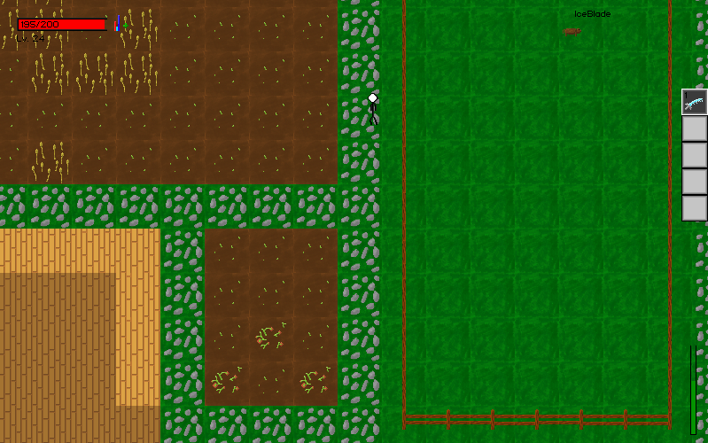

Pixel Art Improvement(2013-2018)
I started making games with Pygame in the end of 2013 with my first main game being Super Launchers(an SSB ripoff that someone dared me to make).
In the beginning of 2014 I made another game that is what I'd call my first "pixel art" based game. Funny enough, I named it Battlegrounds.
Next came Sandbox RPG, which was a temporary name for a sandbox RPG I was working on. This was around the end of 2014. I didn't really do much in the middle of 2014 when it came to making games.
By around June 2015, I was working on Mine Explorer, which was an underground RPG where you collected items to help keep a group of people stuck underground alive. I had never even heard of Cave Story at this point, so it wasn't an inspiration or anything. It definately had somewhat of an effect on my games later on though.
I'm not sure when this was, but I think it was after Mine Explorer and before Zykania. You used your "force" which pushed objects away from wherever you focused it and you used it to fight. I really love the concept of this game and I might reuse it some day.
The dates for this one are a bit fuzzy because I'm not sure when I started it. I never officialy ended development for this game. It was a continuation of Sandbox RPG, but it was renamed to Zykania, which is the world that The Crushed Sky and Artifact Hunter take place in.

This game was made in August of 2016 for the unranked 36th Ludum Dare. I'd probably call this the most important game I've made so far. The improvement from Force to Artifact Hunter was huge. It was also a huge leap forward in artwork for me.
I remember working on this game around December of 2016 and a little bit into 2017. This was another pretty big leap forward in artwork for me as I had just started to dither(a bit too much here though). It was supposed to be a dungeon crawler where you could take anything found in the dungeon to your home where you lived, grew crops, made stuff, etc.. The dungeons were not generated, I actually made an extremely effective level editor so I could make levels really fast that still had a nice feel.
This game was made for the 39th Ludum Dare in July of 2017. It took a bit of inspiration from FEZ in the art style, and I've kept a bit of that with me ever since. It got 100th in Fun and 90th in Graphics. It placed 143rd Overall out of a 1000ish entries.
Alchemic Archer was the game where I was finally satisfied with where the quality of my pixel art was at. It was made for the first Alakajam in September 2017 and placed 3rd in Graphics out of 36 entries. It was my first 4.0+(on the LD scale) in graphics I've ever received. I remember taking a bit of inspiration from Roguelight, but not in the art style. The art style was inspired by rxi.
The Crushed Sky was probably the first time I really did pixel art that wasn't a spin on someone else's style. If you look at all the artwork for the game, you can see a pattern of vertical lines everywhere. I thought it gave the game a pretty cool gloomy feel. This was made for the Ludum Dare in December of 2017 and placed 28th in Graphics out of a 1000ish entries.
This was a project I was working on in the beginning of 2018. It was basically making fun of Pokemon and the idea that some Pokemon(like Alakazam) are way smarter than their trainers. This is where the base palette I used in Lollipop Ninja originated from.
Lollipop Ninja was my experimentation with a style I've seen in quite a few games. I like to call it the "blob style" as almost everything(even bricks) is rounded and shaded with blobs. I was pretty proud of it overall as a game. It was made for the 2nd Alakajam in February of 2018.
Super Potato Bruh was my first non-game jam release. I based my style for some things on Nykra and Celeste. I designed the game around my strengths in art and music. I also made it a platformer since it's my specialty. Super Potato Bruh was meant to be an analytics test to see where my game development skills were. Super Potato Bruh was released in September of 2018 and had a Steam release that October.